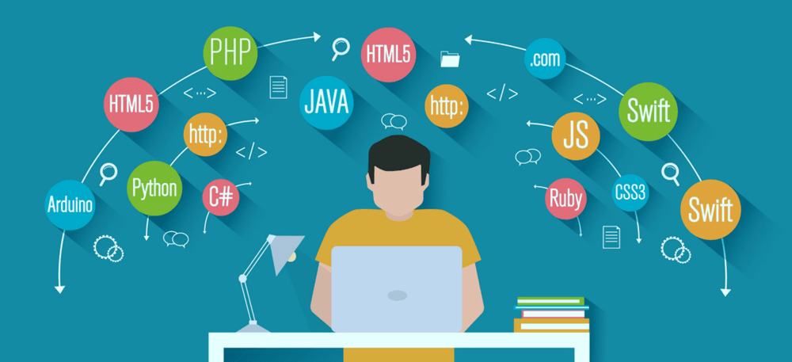

Introdução
Minha jornada na programação começou com curiosidade e vontade de aprender como a tecnologia pode transformar o mundo. Desde então, venho explorando diversas linguagens, ferramentas e projetos que me desafiam e inspiram.
Marcos Importantes
- Início com conceitos básicos de lógica e algoritmos.
- Participação no Biopark Connect 2021, onde a curiosidade virou paixão.
- Aprendizado de linguagens como Python, JavaScript e outras.
- Desenvolvimento de projetos pessoais e colaborativos.
- Exploração de frameworks e ferramentas modernas.
Imagens da Jornada

